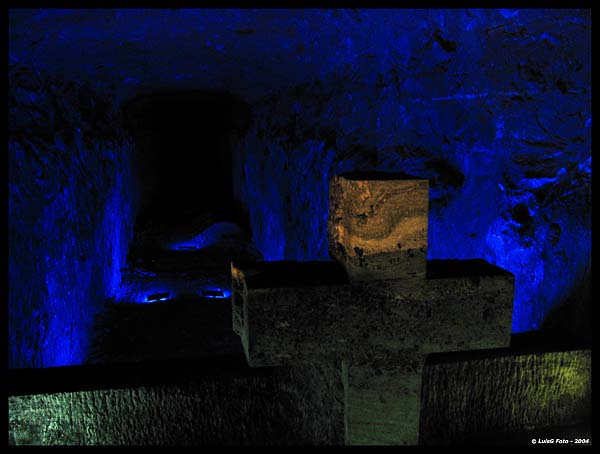
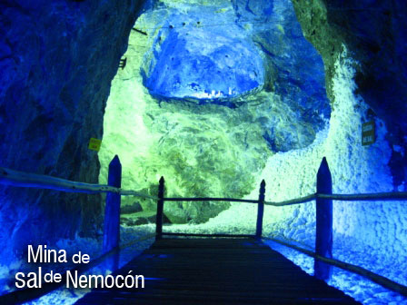
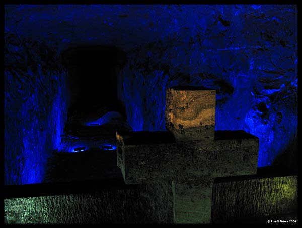
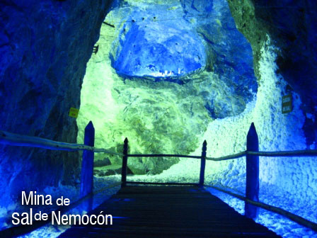

LOCALIZACION GEOGRAFICA
Localizada al centro del departamento, es recorrida de norte a sur por el Río Bogotá. En su territorio existen minas de sal en los Municipios de Nemocón y Zipaquirá; siendo la Zipaquira la más famosa y conocida, ambas minas están dedicadas al turismo. Fue colonizada por los Muiscas. Gran parte del territorio se encuentra sobre la Sabana de Bogotá.
| NUMERO | NOMBRE |
|
1
2 3 4 5 6 7 8 9 10 11 |
Cajicá
Chía Cogua Cota Gachancipá Nemocón Sopó Tabio Tenjo Tocancipá Zipaquirá |

Actualmente esta compuesta por 11 Municipios, que son Cajicá, Chía, Cogua, Cota, Gachancipá, Nemocón, Sopó, Tabio, Tenjo, Tocancipá y Zipaquirá.
LIMITES PROVINCIALES
Norte: Provincia de Ubaté
Sur: Distrito Capital
Oeste: Provincias de Sabana Occidente y la Provincia de Rionegro
Este: con las Provincias del Guavio y la Provincia de Almeidas
HISTORIA
 



|
"Sitios de Interes Provincia de Sabana Centro"
Se crea a partir de la Ordenanza 023 de 1998, que establece la actual división del departamento en 15 provincias. Anteriormente la provincia de Sabana Centro estaba compuesta por los municipios de Cajicá, Chía, Cogua, Cota, Distrito Capital, Gachancipá, Guasca, La Calera, Nemocón, Sopó, Tocancipá y Zipaquirá, incorporando a Tabio y Tenjo de la Provincia de Sabana Occidente, pero segregandole los Municipios de La Calera y Guasca que pasaron a hacer parte de la Provincia del Guavio.

|

|